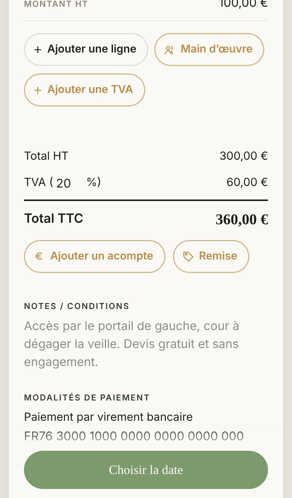

Proposé
Quand
Où le client la lit


Aujourd'hui
Ce qui change
- Tu touches « Notes / conditions » : une fenêtre descend en haut de l'écran, au-dessus du clavier qui s'ouvre.
- Elle montre la page que ton client ouvre depuis le SMS, ta note entourée d'or à sa place, avec la phrase : il la lira ici, sur son téléphone.
- Elle reste 8 secondes ; le trait d'or dessous se vide pour le montrer. Un appui la ferme avant.
- Touchez le champ dans le téléphone, ou « Revoir la fenêtre ».
Pourquoi au toucher du champ
- Tu l'apprends au moment où tu écris : tu sais pour qui tu écris, et tu peux tourner ta phrase pour lui.
- À l'envoi, la fenêtre arrive quand la note est déjà écrite. Elle ne peut pas venir sur « Envoyer le devis » lui-même : ce bouton ouvre aussitôt ta messagerie, et elle passerait derrière. Touchez « À l'envoi » pour comparer.
À trancher
- Au toucher du champ, ou à l'envoi ?
- À chaque fois, ou seulement les premières fois que tu touches le champ ? Huit secondes à chaque devis finiraient par gêner.
- A ou B : la place de la note sur la page du client, choisie sur la planche « La note du devis, chez le client ».